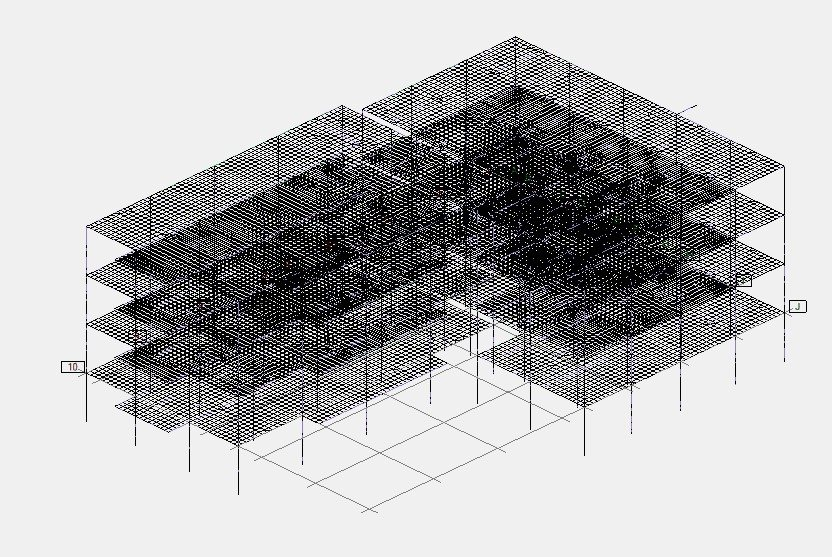
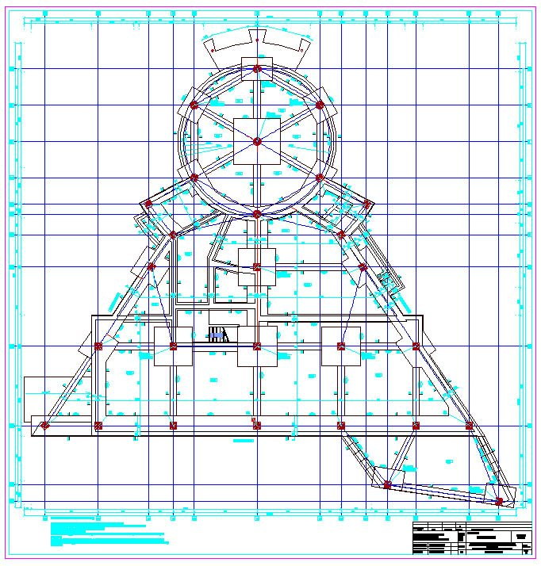
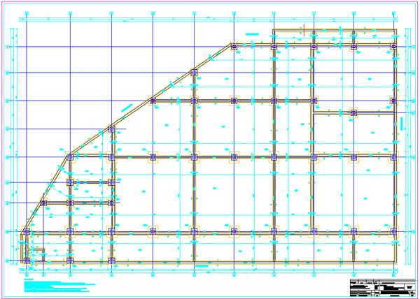
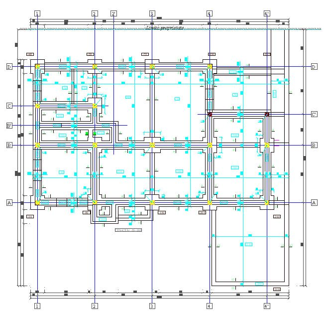
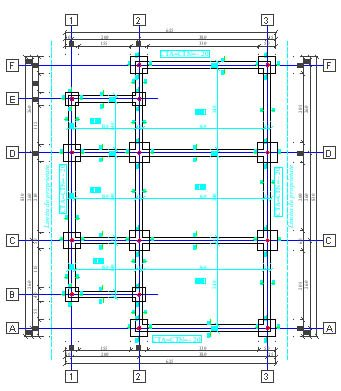

Portofoliu
Lucrări semnificative
O selecție de lucrări din 2007 până azi, în toată țara: clădiri, infrastructură, energie.
Exemple de proiecte
Din documentațiile noastre
Apasă pe o imagine ca s-o vezi mărită.
Analize structurale
 Analiză de deplasări
Analiză de deplasări Eforturi axiale Fz
Eforturi axiale Fz Momente My la parter
Momente My la parter Momente în grinzi
Momente în grinzi

Model discretizatPlanuri de rezistență


Plan de rezistență, structură circulară

Plan de fundații, clădire industrială

Plan de fundații, locuință

Plan cofraj stâlpi și grinziRidicări topografice


Lista lucrărilor
Lucrări pe ani
SG = studiu geotehnicPT = proiect tehnicRT = ridicare topograficăV = verificare
Beneficiari
Au lucrat cu noi